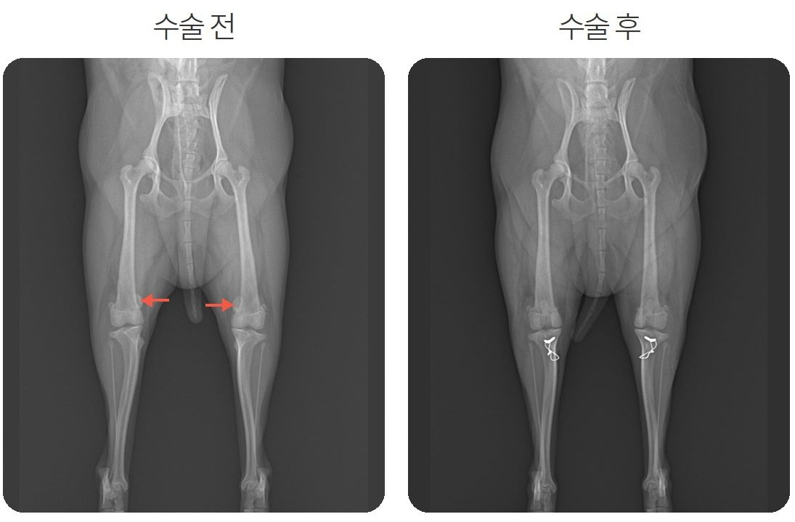

관리부터 시작합니다
- 1~2기이고
- 통증이나 절뚝임이 없을 때
체중 관리, 근력 운동, 정기 검진으로 지켜봅니다.
쿨펫외과동물병원 › 슬개골 탈구 클리닉
PATELLA CLINIC
슬개골이 빠진다고 해서 모두 수술해야 하는 건 아닙니다. 쿨펫외과동물병원은 수술이 꼭 필요한지부터 판단하고, 수술이 필요할 때는 뼈의 정렬을 바로잡는 수술을 합니다. 2015년 개원 이후 슬개골 탈구 수술을 누적 3,000건 이상 진행했습니다.
진료 월 · 화 · 목 · 금 · 토 10:00 ~ 19:00 (수 · 일 휴진) · 수술시간 오후 2~4시 · 수술 당일 퇴원 원칙 · 전화 031-911-9975
WHAT IS IT
슬개골(무릎뼈)이 허벅지뼈 끝의 고랑(활차구)에서 벗어나는 상태입니다. 대부분 안쪽으로 빠지는 내측 탈구입니다.
우리나라에서 많이 키우는 소형견은 대형견보다 무릎 고랑이 얕고, 아래 뼈(경골)가 안쪽으로 돌아간 정도가 커서 슬개골 탈구가 잘 생깁니다.
산책하다가 뒷다리 하나를 들고 깡총거리거나, 잠깐 다리를 뻗었다가 다시 걷는 모습이 흔한 신호입니다.
슬개골 탈구는 한번 생기면 저절로 1기로 돌아가지는 않고, 시간이 지나며 조금씩 진행하는 경우가 많습니다. 수술을 하지 않더라도 정기적으로 상태를 확인하는 것이 중요합니다.

GRADE
기수는 무릎을 직접 만져 보는 촉진 검사와 엑스레이로 판단합니다. 기수가 올라갈수록 경골이 안쪽으로 더 돌아가고, 3기쯤 되면 다리가 오다리처럼 보이기도 합니다.
| 기수 | 슬개골 상태 | 흔히 보이는 모습 |
|---|---|---|
| 1기 | 손으로 밀면 빠지지만, 놓으면 바로 제자리로 돌아갑니다. | 대부분 증상이 없습니다. 검진에서 우연히 발견되는 경우가 많습니다. |
| 2기 | 걷다가 저절로 빠졌다가, 다리를 뻗거나 손으로 밀면 들어갑니다. | 가끔 뒷다리를 들고 몇 걸음 깡총거립니다. |
| 3기 | 대부분 빠져 있고, 손으로 밀면 들어가지만 다시 빠집니다. | 다리를 자주 들거나 절고, 다리가 휘어 보이기 시작합니다. |
| 4기 | 항상 빠져 있고, 손으로 밀어도 들어가지 않습니다. | 무릎을 제대로 펴지 못하고 걸음이 눈에 띄게 불편합니다. |
같은 기수라도 아이마다 불편한 정도가 다릅니다. 그래서 기수만 보고 수술을 결정하지 않습니다.
BEFORE SURGERY
엑스레이와 함께 걸음걸이, 통증, 나이, 체중을 직접 보고, 수술이 꼭 필요한지부터 설명해 드립니다. 3,000건 넘게 수술해 봤기 때문에 수술이 필요 없는 아이도 정확히 구분합니다.
체중 관리, 근력 운동, 정기 검진으로 지켜봅니다.
영양제와 재활은 근육을 키우고 통증을 덜어 주는 데 분명 도움이 됩니다. 하지만 이미 틀어진 뼈를 되돌려 주지는 못합니다. 뼈가 더 틀어지고 관절염이 자리 잡은 뒤의 수술은 결과가 아쉬울 수 있어, 수술이 필요한 아이라면 너무 미루지 않으시길 권합니다.
SURGERY
슬개골 수술에서 가장 중요하게 보는 것은 뼈의 정렬입니다. 틀어진 뼈를 그대로 두고 주변 조직만 당겨 묶으면, 시간이 지나 다시 빠지는 경우가 많기 때문입니다. 그래서 아이의 다리 상태에 맞춰 활차구 성형술, 경골조면 전위술(TTT), 외측 관절낭 중첩술, 내측 관절낭 절제를 한 번의 수술에서 함께 하고, 필요하면 교정 술식을 더합니다.
한 가지 술식만 하지 않습니다. 아이의 다리 상태에 맞춰 아래 술식을 한 번의 수술에서 함께 해, 뼈와 연부조직을 모두 바로잡습니다.
탈구가 심하거나 다리가 많이 돌아간 경우, 아이 다리 구조에 맞춰 교정 술식을 더합니다.
허벅지뼈 자체가 휘어 있는 경우, 뼈를 잘라 각도를 바로잡는 수술을 함께 합니다.
십자인대 파열이 함께 있으면 한 번의 수술로 동시에 교정할 수 있는지 상담합니다. 소형견은 hTPLO(반원형 TPLO)로 경골 조면의 면적을 일반 TPLO보다 크게 남겨, 슬개골 수술(TTT)을 같이 하기에 효과적입니다. 노현준 원장이 이 동시 교정을 연구한 논문을 국제 학술지 Animals(MDPI)에 게재했습니다. 논문 보기 · TPLO와 hTPLO 차이 보기
수의 외과 석사 수료 · 수의 외과 학회 정회원 · 골관절학회 정회원 · AO principle course 이수 · 수의사 정형외과 수술 교육 프로그램 강사 · 국제 학술지 Animals(MDPI) 슬개골 탈구 · 십자인대 동시 교정 논문 게재
"한쪽은 2기, 한쪽은 3기인데 3기만 하면 되나요?"라는 질문을 자주 받습니다. 아파하는 다리부터 수술하고, 반대쪽은 나중에 하셔도 괜찮습니다. 양쪽을 한 번에 하는 것도 가능하니 아이 상태를 보고 함께 정합니다.
슬개골이 오래 빠졌다 들어갔다 하면 무릎을 붙잡고 있는 십자인대가 그 부담을 받습니다. 그래서 슬개골 아이들은 십자인대 상태도 같이 확인합니다. 노현준 원장은 슬개골 탈구와 십자인대 파열 동시 교정(TPLO+TTT, CTWO+TTT)을 비교한 논문을 국제 학술지 Animals(MDPI)에 게재했습니다. doi.org/10.3390/ani16182912
BEFORE & AFTER
| 장비 | 용도 |
|---|---|
| 호흡마취기 (Dräger Atlan) | 흡입 마취를 안정적으로 유지 |
| 환자 모니터 | 마취 중 심박 · 호흡 · 산소포화도 등을 계속 확인 |
| C-Arm (실시간 엑스레이) | 수술 중 뼈 정렬과 핀 위치를 바로 확인 |
| 방사선 촬영 (엑스레이) | 기수 판단, 수술 전 검사, 수술 후 3개월 재진 촬영 |
| PDT 레이저 | 통증 관리와 재활 |
재발 시 재수술 기준: 본원에서 슬개골 탈구 수술 후 1년 이내에 재발하면, 재진단 결과에 따라 추가 비용 없이 재수술해 드립니다. 외부 요인에 의한 재발은 치료비가 발생할 수 있습니다.
수술 비용은 체중과 필요한 술식에 따라 정해져 있으며, 상담 때 포함 항목을 하나씩 설명해 드립니다.
FAQ
아닙니다. 1~2기이고 통증이나 절뚝임이 없다면 수술보다 체중 관리, 근력 운동, 정기 검진을 먼저 권합니다. 다리를 들고 다니거나 자주 절뚝이는 경우, 탈구가 심해 걸음이 불편한 경우, 십자인대 파열이 함께 있는 경우에 수술을 상담합니다.
근육을 키우고 통증을 덜어 주는 데는 도움이 됩니다. 하지만 이미 틀어진 뼈를 되돌리지는 못합니다. 그래서 수술을 하지 않더라도 정기적으로 상태를 확인하는 것이 중요합니다.
꼭 그렇지는 않습니다. 아파하는 다리부터 수술하고 반대쪽은 나중에 하셔도 괜찮습니다. 양쪽을 같이 하는 것도 가능하며, 아이 상태를 보고 상담해 드립니다.
정형외과 수술 후 당일 퇴원을 기본으로 합니다. 입원을 원하시면 15kg 이하 아이는 월 · 목 · 금요일 수술 시 1박 2일 입원이 가능합니다. 노령견이나 기저질환이 있는 경우 입원이 어려울 수 있습니다.
본원에서 슬개골 탈구 수술 후 1년 이내에 재발하면 재진단 결과에 따라 추가 비용 없이 재수술해 드립니다. 외부 요인에 의한 재발은 치료비가 발생할 수 있습니다.
뼈 모양과 상태에 따라 한 번의 수술로 동시에 교정할 수 있습니다. 동시 교정이 가능한지는 진료 후 상담해 드립니다.
지금 수술이 필요한지, 지켜봐도 되는지 솔직하게 말씀드리겠습니다.
031-911-9975